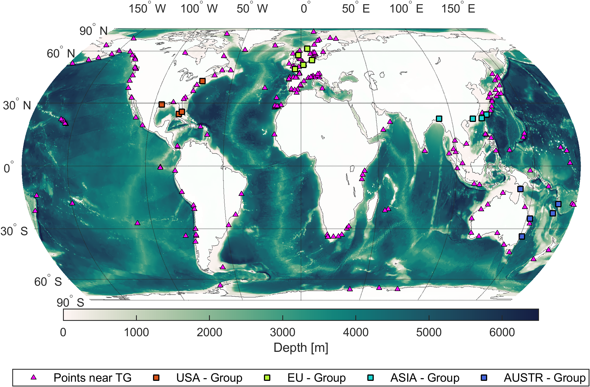
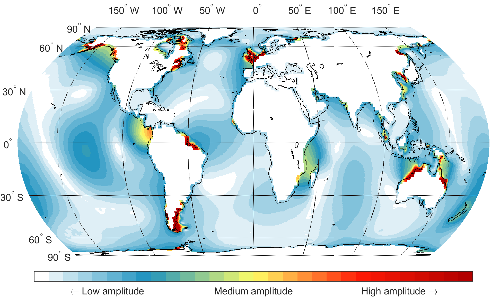

2. METODOLOGY -> 2.1 Modelling Approach
Figure 1. Bathymetry of the Global Ocean Surge (GOS) domain. Colour shading indicates depth (m). Triangles indicate 216 tide-gauge stations used for validation, including the tide-gauges groups identified in the legend and used in Figure 3.

Click the image to open it in a new tab and zoom in.
2. METODOLOGY -> 2.2 Radiational Tides Filtering
Figure 2: (a) Spectral power derived from 1,099 points worldwide, every 8° and 216 locations tide-gauge stations (b)Histograms of the ten highest-energy peaks within the semidiurnal, diurnal, and terdiurnal bands, respectively. The bin width is approximately 3 minutes.
Point locations
Histograms of the ten highest-energy peaks
2. METODOLOGY -> 2.2 Radiational Tide Filtering
Figure 3. Time series of the raw simulated data from 18 tide-gauges locations in four regions historically identified as storm surge hotspots (Bernier et al., 2024). (a)USA Group, (b)EU Group, (c)ASIA Group, (d)AUSTR Group. The locations are shown in colours in Figure 1. Panels at the right of time series display their corresponding power spectra for both the observational data (tide gauges, shown in grey) and the raw simulated data (colored lines).
Time series
Power spectral density

Click on the image to open it in a new tab and zoom.
Station locations
2. METODOLOGY -> 2.4 Extreme Value Analysis
[borrador, pendiente de revision] Figure 4. Monthly maxima from the GOS dataset (MM-GOS, grey squares) at three tide-gauge locations, with the month-dependent 50-year return level (red dotted) and the year-integrated 50-year return level (blue dash-dot).
3. THE GOS DATASET EVALUATION
Figure 5. (a) Coastal worldwide scatter plot showing the dominant frequency (expressed as period in hours) of the highest-energy peak derived from power spectral density analysis. Line thickness represents the normalised amplitude corresponding to the highest-energy frequency. (b) Global map showing the spatial distribution of normalised amplitudes for the dominant highest-energy frequency sampled on a 1º x 1º grid.

Click the image to open it in a new tab and zoom in.
3. THE GOS DATASET EVALUATION
Figure 6. Validation statistics of the GOS dataset, computed at model grid points nearest to 216 tide-gauge stations. (a) Pearson correlation coefficient (r); (b) bias (cm); (c) root-mean-square error (RMSE, cm); (d) percentile-based normalised RMSE (NRMSEprct}, %); and (e) normalised bias (NBias). The inset box provides overall summary statistics for each metric, where the overline denotes the mean, vertical bars denote the absolute value, and p+ and p- represent the percentage of locations with positive and negative values, respectively.
3. THE GOS DATASET EVALUATION
Figure 7. (a) Maximum storm surge level (maximum of maxima) calculated from the GOS dataset for the coastal zones and (b) Maximum Absolute Error (MAE, cm) between simulated and observed mean annual surge maxima at tide gauge stations, defined in Eq. (3)
4. EXTREME STORM SURGE
Figure 8. Estimated shape parameter (φ0) of GEV non-stationary for the coastal GOS dataset grid points.
4. EXTREME STORM SURGE
Figure 9:(a) Integrated 50-year return level of storm surges derived from the GOS dataset (m). (b) Intra-annual variability of the 50-year return level; colours indicate the month with the highest probability of occurrence of the largest extremes, while line thickness represents the amplitude of the seasonal curve at each grid point.